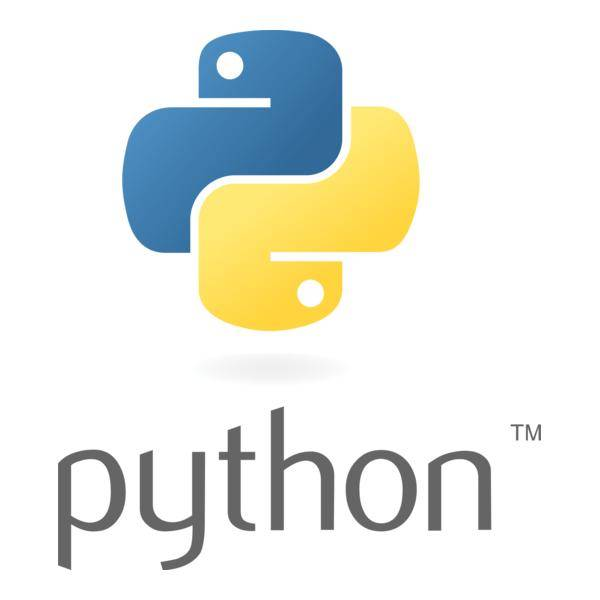

امروزه پایتون (Python) یکی از محبوبترین زبانهای برنامهنویسی در جهان است. از دانشجویان و برنامهنویسان مبتدی گرفته تا شرکتهای بزرگی مانند گوگل، مایکروسافت و نتفلیکس از این زبان استفاده میکنند. دلیل این محبوبیت تنها سادگی آن نیست؛ بلکه پایتون در حوزههای مختلفی مانند طراحی وب، هوش مصنوعی، علم داده، امنیت سایبری و اتوماسیون کاربرد دارد.
اگر قصد ورود به دنیای برنامهنویسی را دارید، پایتون یکی از بهترین انتخابها برای شروع محسوب میشود.
پایتون یک زبان برنامهنویسی سطح بالا، متنباز (Open Source) و چندمنظوره است که در سال ۱۹۹۱ توسط Guido van Rossum معرفی شد.این زبان به گونهای طراحی شده است که کدنویسی با آن ساده، خوانا و قابل فهم باشد. به همین دلیل بسیاری از دانشگاهها و آموزشگاههای برنامهنویسی، پایتون را به عنوان اولین زبان برنامهنویسی به دانشجویان آموزش میدهند.
مهمترین دلیل محبوبیت پایتون، سادگی آن است. سینتکس این زبان بسیار شبیه زبان انگلیسی است و نسبت به بسیاری از زبانها مانند C++ یا Java کدهای کوتاهتر و خواناتری دارد.
برای مثال چاپ یک متن در پایتون تنها با یک دستور انجام میشود:
print("Hello, World!")
پایتون تقریباً در همه شاخههای فناوری استفاده میشود، از جمله:
یکی از بزرگترین مزیتهای پایتون، داشتن هزاران کتابخانه آماده است. چند نمونه معروف:
وجود این کتابخانهها باعث میشود برنامهنویس نیازی به نوشتن همه چیز از ابتدا نداشته باشد.
میلیونها برنامهنویس در سراسر دنیا از پایتون استفاده میکنند. اگر هنگام برنامهنویسی با مشکلی روبهرو شوید، معمولاً پاسخ آن را در انجمنهای برنامهنویسی یا مستندات رسمی پیدا خواهید کرد.
امروزه بسیاری از شرکتهای فناوری به دنبال برنامهنویسان پایتون هستند. افرادی که این زبان را یاد میگیرند میتوانند در زمینههای زیر فعالیت کنند:
پایتون یکی از قدرتمندترین و محبوبترین زبانهای برنامهنویسی دنیا است. سادگی یادگیری، کاربردهای گسترده، کتابخانههای فراوان و بازار کار مناسب باعث شدهاند که این زبان به انتخاب اول بسیاری از دانشجویان و برنامهنویسان تبدیل شود. اگر به دنبال یادگیری برنامهنویسی هستید، پایتون میتواند نقطه شروع بسیار خوبی باشد و مسیر ورود شما به دنیای فناوری را هموار کند.